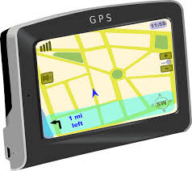

Cara Membaca GPS dan Menghitung Koordinat Latitude Longitude
Feb 19, 2017Views : 5,487Angka koordinat lokasi bumi dibagi menjadi 3 format, koordinat di Google Maps berbeda dengan dengan koordinat di GPS (Global Positioning System). Namun pada beberapa GPS sudah mencantumkan ketiga jenis koordinat. Berikut ini adalah ketiga jenis koordinat : .....
(Lihat Selengkapnya)
Sejarah dan Fakta Mearik Tentang Google
Nov, 2017Views : 15,010
Banyak pemberitaan media yang menarik seputar Google. Namun ternyata, masih ada fakta-fakta unik yang
belum diketahui oleh banyak orang. Mau tahu fakta menarik itu, simak artikel berikut :
1. Nama Google lahir karena “kecelakaan“ .....
Tentang Saya(Owner)
Saya Imanu F.A., Mahasiswa Universitas Teknologi Yogyakarta, jurusan Teknik informatika,angkatan 2014
Kumpulan Artikel
- Cara Membaca GPS dan Menghitung Koordinat Latitude Longitude
- Sejarah dan Fakta Menarik Tentang Google
- (article3)